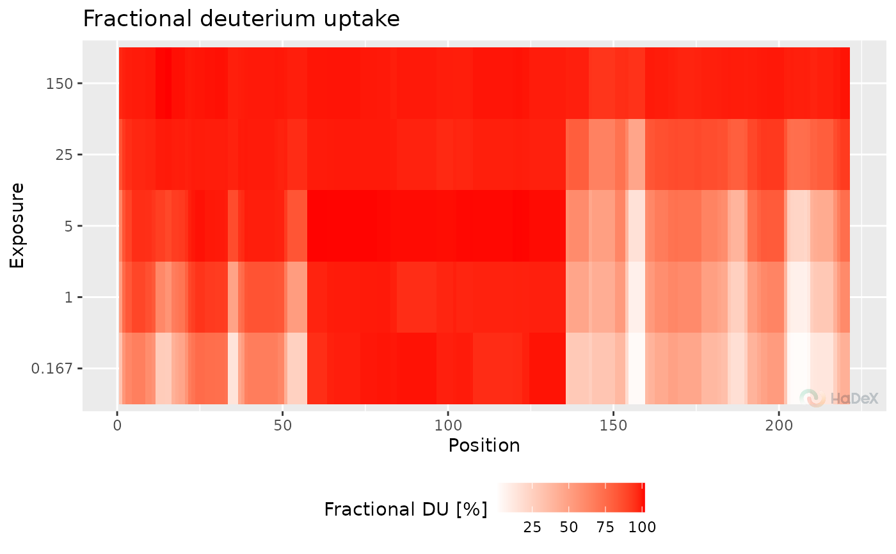
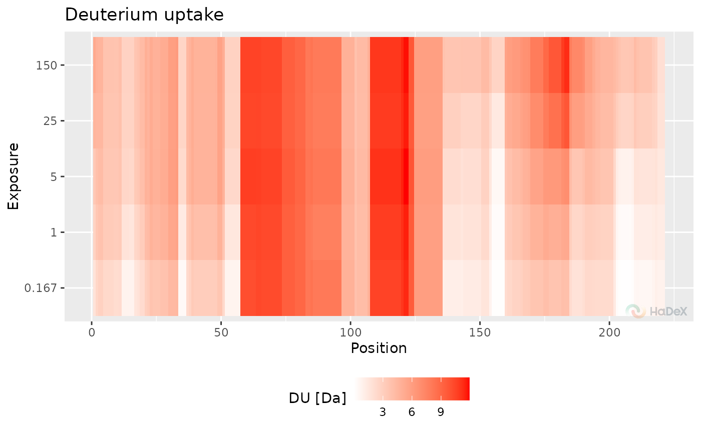

Plots aggregated uptake
plot_aggregated_uptake.RdPlots aggregated uptake
Examples
kin_dat <- create_uptake_dataset(alpha_dat, states = "Alpha_KSCN")
aggregated_dat <- create_aggregated_uptake_dataset(kin_dat)
plot_aggregated_uptake(aggregated_dat, panels = FALSE)

plot_aggregated_uptake(aggregated_dat, fractional = FALSE, panels = FALSE)

plot_aggregated_uptake(aggregated_dat, fractional = FALSE, theoretical = TRUE, panels = TRUE)
#> NULL